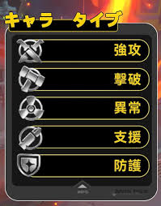

戦闘タイプの特徴（一覧）

 戻る
戻る
- 強攻型： 火力に特化したタイプで、短時間に大ダメージを与えるのが得意。ボス戦などで決定力を発揮する一方、耐久力は控えめ。
- 撃破型： 敵をブレイクして行動を止めたり、味方が攻撃しやすい状況を作る役割。攻守のバランスが良く、戦闘の流れを作りやすい。
- 異常型： デバフや状態異常を付与することに長け、敵を弱体化して戦闘を有利に進める戦略タイプ。サポート力が高い。
- 支援型： 回復、バフ（強化）、補助がメイン。味方全体の安定感を大きく上げ、長期戦で頼りになる存在。
- 防護型： 高耐久で前線を守るタンク役。敵の攻撃を受け止め、味方が安全に戦える環境を整える重要ポジション。
- 命破型： 攻守のバランスが良く、専用ステータス「透徹力」による防御無視攻撃が最大の特徴。どんな状況でも安定して戦える万能タイプ。
おすすめの編成
おすすめのチーム編成は、
「近接アタッカー（火力）＋ タンク（壁役）＋ サポート（回復／バフ）」 の3タイプを組み合わせるスタイルです。
まず、近接アタッカーはチームのメイン火力として活躍し、敵に大きなダメージを与える役割を持っています。 素早く攻撃して敵の体力を削ることで、戦闘の中心となる存在です。
次にタンクは、敵の攻撃を一身に受け止めて味方を守る「壁役」です。 高い耐久力と防御力を持ち、アタッカーが安心して攻撃できる環境を作ります。
最後にサポートは、回復や強化（バフ）によって味方全体を補助する役割です。 チームの継戦能力を高め、戦闘を有利に進めるために欠かせません。
これら3つの役割をバランスよく組み合わせることで、攻撃も防御も安定し、 どんな敵にも対応しやすい強力なパーティになります。
「Zenless Zone Zero」は近未来都市で高速アクションを繰り広げるRPG。 仲間と連携して敵を撃破する、爽快感と戦略性が魅力です。